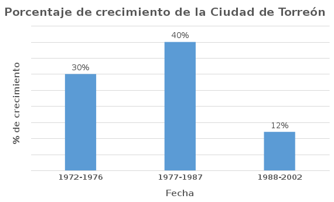

La dispersión urbana que vive la Ciudad de Torreón tiene sus inicios con el primer crecimiento urbano acelerado que se da en los años de 1972-1976, en sólo cuatro años en un 30%, de acuerdo con el Plan Director de Desarrollo Urbano de Torreón (PDDUT). Este crecimiento se debió a las iniciativas federales de apoyar la industrialización, con la creación del parque Industrial Lagunero en la ciudad de Gómez Palacio y posteriormente las áreas industriales en la ciudad de Torreón. Esto provocó la necesidad de viviendas llamadas sociales y media así como los equipamientos que conlleva.
El factor que promueve el crecimiento de la ciudad en cuanto al sector vivienda son las políticas públicas a nivel nacional basadas en “el Art. 123 de nuestra Carta Magna el Derecho Social a la Vivienda” para el apoyo en la adquisición de una vivienda social y media, que suple la necesidad de habitación para la clase trabajadora, con la creación de esquemas, como el INFONAVIT que surge en 1972, y la ley del ISSSTE con el fondo de la vivienda en 1974.
El crecimiento en la siguiente década de 1977-1987 continúa a un ritmo del 40%, según el PDDUT. Se mantiene en estos niveles hasta que en 1995 con la crisis económica coloca un gran número de créditos hipotecarios en cartera vencida, lo que provocó un endurecimiento en cuanto a la otorgación de los mismos, frenando los programas para la construcción de viviendas llamadas en serie y se refleja en la contención del crecimiento de la ciudad por uso habitacional.
A partir de 2001 estos esquemas de créditos hipotecarios se readaptan para promover créditos hipotecarios que permitan comprar casas de nivel medio y aparecen esquemas de Sociedades Hipotecarias como Sociedad Hipotecaria Federal. Se construye el Consejo Nacional de Organismos Estatales de Vivienda (CONOREVI) y la Comisión Nacional de Fomento a la Vivienda que posteriormente cambia a la (CONAVI). En 2006 aparecen diferentes modelos de vivienda como los Desarrolladores Urbanos Integrales Sustentables (DUIS) y las Hipotecas Verdes del INFONAVIT.

Los efectos de estas políticas públicas fueron un nuevo modo de producción de vivienda media y social, que impacta el crecimiento y dispersión de las ciudades, con un sector desarrollador de fraccionamientos que busca la elección de sitios a un precio bajo con alguna infraestructura regional y con la factibilidad de cambio de uso del suelo de rural a urbano.
Por eso, los conjuntos habitacionales surgen alejados de los centros urbanos donde se encuentran los puntos de trabajo, educación y recreación, carecen de equipamientos de espacios públicos, servicios de abasto, de educación, de salud y recreación; llevando a las ciudades a la Metropolización.
Estas prácticas provocan que las ciudades se dispersen o expandan. En el caso de Torreón, es una ciudad dispersa con una densidad muy baja, vacíos urbanos, con predios que solo especulan por periodos prolongados de tiempo, esperando la oportunidad de demanda en el mercado inmobiliario, que permita el aumento del margen de utilidad de la inversión.
Aunado a esto; a mayor oferta inmobiliaria por la creación de nuevos fraccionamientos con modelos "cerrados, seguros y áreas públicas, privadas" ubicados en las periferias de las manchas urbanas, se fomenta el éxodo de la población, abandonando los centros urbanos que ya cuentan con infraestructura y equipamientos, iniciando un ciclo de pérdida de valor en algunos sectores de la ciudad que se quedan vacíos.
La solución: regeneración urbana
Actualmente la ciudad de Torreón tiene una población estimada a 2015 de 646,586 habitantes en el área urbana y 32,702 en el área rural, con 477 fraccionamientos habitacionales registrados en su mancha urbana (incluyendo colonias) varios con diferentes problemáticas generales y particulares en mayor y menor medida como son: deficiencias de equipamiento, transporte público, vacíos urbanos, bajas densidad, deficiencias de espacios públicos, etc.
La vía para mitigar la dispersión urbana en la ciudad es fomentar el desarrollar proyectos de aprovechamiento de polígonos y de espacios urbanos subutilizados o deteriorados, con la creación de políticas públicas que faciliten mediante el apoyo de la banca y el gobierno federal inversiones para programas de regeneración urbana, el fomento de los usos mixtos, la vivienda vertical en algunos sectores como el Centro Histórico, proteger y fomentar el patrimonio cultural, ambiental la actividad económica local, mejoramiento de imagen urbana, rescate de barrios, así como mejorar la vivienda popular y el equipamiento social.